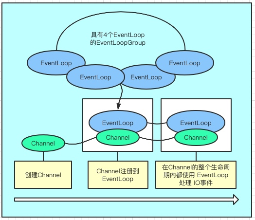
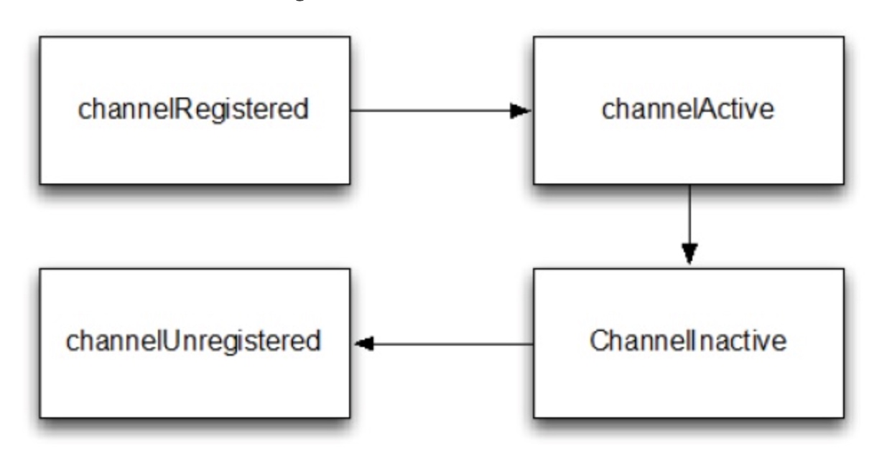
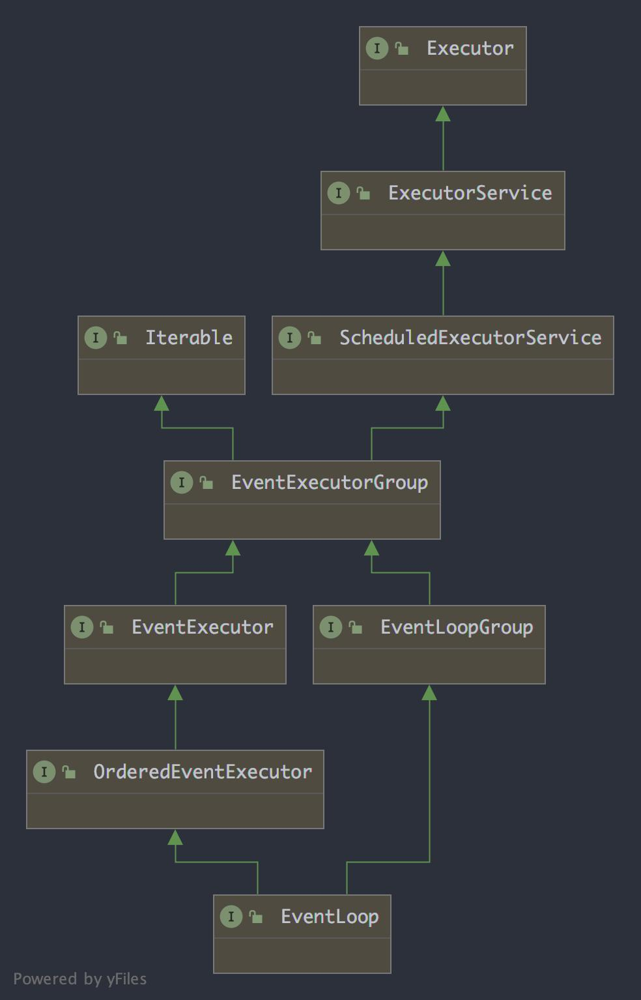
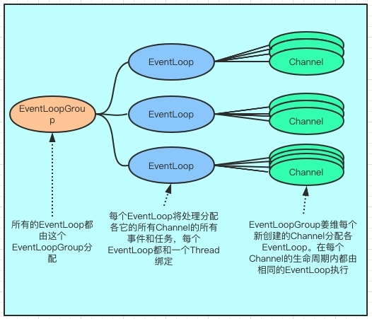
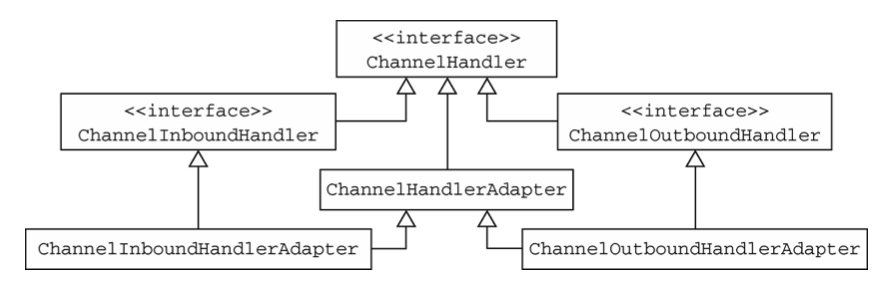
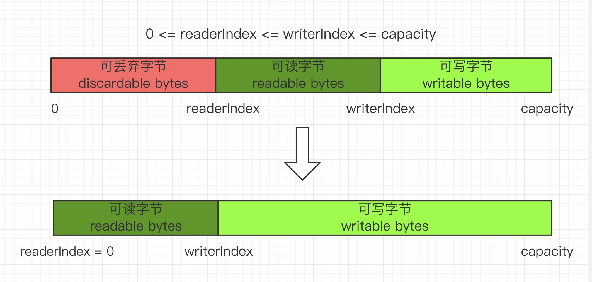

Netty是什么？
Netty 是JBOSS 提供的一个java开源框架，它提供异步的、事件驱动的网络应用程序和工具，用以快速开发高性能、高可靠性的网络服务器和客户端程序。
为什么使用Netty
有以下几点致使我们去使用 Netty：
JAVA NIO 异步框架虽然提供了多路复用 IO 的支持，但是没有提供上层的 “信息格式” 的封装。例如JAVA NIO没有提供针对JSON、protocol这些信息的封装。
NIO的类库和API比较复杂，学习成本很高，需要熟练的掌握 Selector、ByteBuffer、ServerSocketChannel、SocketChannel等组件，要能正常使用 NIO 需要了解 NIO涉及到的 Reactor线程模型、多线程、网络编程等技能的支持。
要编写一个可靠的、已维护的、高可用的NIO服务器应用，除了框架本身要兼容实现各类操作系统之外，更重要的是它还要处理很多长层特有的服务，例如客户端权限、信息格式的封装、数据读取、断线重连、半包读写、心跳机制等，这些是 Netty 提供了相应的支持。
JAVA NIO 框架存在一个 poll/epoll 的bug： Selector 不能在 Selector.select(timeout) 上 阻塞，这也就意味着CPU资源占用率会达到 100%（linux内核上，JDK1.7 以及之前的版本会重现）
Netty 为什么要使用 NIO 而不是 AIO
Netty 不看重 Windows 上的使用，在 Linux 系统上，AIO 的底层实现仍使用 EPOLL，没有很好实现 AIO，因此在性能上没有明显的优势，而且被 JDK 封装了一层不容易深度优化。
AIO 还有个缺点是接收数据需要预先分配缓存, 而不是 NIO 那种需要接收时才需要分配缓存, 所以对连接数量非常大但流量小的情况, 内存浪费很多。
Netty核心组件初步了解
EventLoop、EventLoopGroup
Channel
事件和ChannelHandler、ChannelPipeline
ChannelFuture、Promise
EventLoop、EventLoopGroup、Channel之间的关系
EventLoopGroup包含一个或多个EventLoop
一个EventLoop在他的声明周期内只和一个Thread线程绑定
所有的EventLoop处理的 IO 事件都将在它专有的 Thread线程上被处理
一个Channel 在它的生命周期内只注册一个 EventLoop
一个EventLoop 可能被分配各个一个或多个Channel
下面用图来说明他们之间的关系：
Channel 接口
基本的 I/O 操作(bind()、connect()、read()和 write())依赖于底层网络传输所提供的原语。
在基于 Java 的网络编程中，其基本的构造是类 Socket。Netty 的 Channel 接口所提供 的 API，被用于所有的 I/O 操作。大大地降低了直接使用 Socket 类的复杂性。
Channel 生命周期
ChannelRegistered : Channel 已经被注册到了 EventLoop
ChannelActive : Channel 处于活动状态(已经连接到它的远程节点)。它现在可以接收和发送数据了
ChannelInactive : Channel 没有连接到远程节点
ChannelUnregistered : Channel 从 EventLoop 中取消注册
channel生命周期
Channel 接口中重要的方法
eventLoop: 返回分配给 Channel 的 EventLoop
pipeline: 返回分配给 Channel 的 ChannelPipeline
isActive: 如果 Channel 是活动的，则返回 true。活动的意义可能依赖于底层的传输。 例如，一个 Socket 传输一旦连接到了远程节点便是活动的，而一个 Datagram 传输一旦被打开便是活动的。
localAddress: 返回本地的 SocketAddress
remoteAddress: 返回远程的 SocketAddress
write: 将数据写到远程节点。这个数据将被传递给 ChannelPipeline，并且排队直到它被冲刷
flush: 将之前已写的数据冲刷到底层传输，如一个 Socket
writeAndFlush: 一个简便的方法，等同于调用 write()并接着调用 flush()
EventLoop 和 EventLoopGroup
EventLoop 定义了 Netty 的核心抽象，用于处理网络连接的生命周期中所发生的事件。
EventLoop
根据配置和可用核心的不同，可能会创建多个 EventLoop 实例用以优化资源的使用，并 且单个 EventLoop 可能会被指派用于服务多个 Channel。
任务调度
有时你将需要调度一个任务以便稍后(延迟)执行或者周期性地执行，常见的一个用例就是发送心跳消息到远程节点，以检查连接是否仍然还活着。如果没有响应，你便知道可以关闭该 Channel 了。
线程管理
当提交任务到如果(当前)调用线程正是支撑 EventLoop 的线程，那么所提交 的代码块将会被(直接)执行。否则，EventLoop 将调度该任务以便稍后执行，并将它放入 到内部队列中。当 EventLoop 下次处理它的事件时，它会执行队列中的那些任务/事件。
线程的分配
服务于 Channel 的 IO 和事件的 EventLoop 则包含在 EventLoopGroup 中。
异步传输实现只使用了少量的 EventLoop(以及和它们相关联的 Thread)，而且在当前 的线程模型中，它们可能会被多个Channel 所共享。这使得可以通过尽可能少量的Thread 来 支撑大量的 Channel，而不是每个 Channel 分配一个 Thread。EventLoopGroup 负责为每个 新创建的 Channel 分配一个 EventLoop。

一旦一个 Channel 被分配给一个 EventLoop，它将在它的整个生命周期中都使用这个 EventLoop(以及相关联的 Thread)。
这里就需要特别注意一个类了 ThreadLocal，因为一个 EventLoop 通 常会被用于支撑多个 Channel，所以对于所有相关联的 Channel 来说，ThreadLocal 都将是 一样的。这使得它对于实现状态追踪等功能来说是个糟糕的选择。然而，在一些无状态的上下文中，它仍然可以被用于在多个 Channel 之间共享一些重度的或者代价昂贵的对象，甚至是事件。
ChannelFuture 接口
Netty 中所有的 I/O 操作都是异步的。因为一个操作可能不会立即返回，所以我们需要 一种用于在之后的某个时间点确定其结果的方法。为此，Netty 提供了 ChannelFuture 接口， 其 addListener()方法注册了一个 ChannelFutureListener，以便在某个操作完成时(无论是否 成功)得到通知。
ChannelHandler
ChannelHandler 承担了所有处理入站和出站数据的处理。ChannelHandler 的方法是由网络事件触发的。
在ChannelHandler被添加到ChannelPipeline 中或者被从ChannelPipeline 中移除时会调用下面这些代表 ChannelHandler 生命周期的方法方法。这些方法中的每一个都接受一个ChannelHandlerContext 参数。
handlerAdded 当把 ChannelHandler 添加到 ChannelPipeline 中时被调用
handlerRemoved 当从 ChannelPipeline 中移除 ChannelHandler 时被调用
exceptionCaught 当处理过程中在 ChannelPipeline 中有错误产生时被调用
Netty 定义了下面两个重要的 ChannelHandler 子接口：
ChannelInboundHandler——处理入站数据以及各种状态变化;
ChannelOutboundHandler——处理出站数据并且允许拦截所有的操作
ChannelInboundHandler
ChannelInboundHandler 会在数据被接收时或者与其对应的 Channel 状态发生改变时被调用。下面我们来看下它所定义的相关方法：
channelRegistered : 当 Channel 已经注册到它的 EventLoop 并且能够处理 I/O 时被调用
channelUnregistered : 当 Channel 从它的 EventLoop 注销并且无法处理任何 I/O 时被调用
channelActive : 当 Channel 处于活动状态时被调用;Channel 已经连接/绑定并且已经就绪
channelInactive : 当 Channel 离开活动状态并且不再连接它的远程节点时被调用
channelReadComplete : 当 Channel 的一个读操作完成时被调用
channelRead : 当从 Channel 读取数据时被调用
channelWritabilityChanged : 当 Channel 的可写状态发生改变时被调用。可以通过调用 Channel 的 isWritable()方法 来检测 Channel 的可写性。与可写性相关的阈值可以通过Channel.config().setWriteHighWaterMark()和Channel.config().setWriteLowWaterMark()方法来设置
userEventTriggered : 当 ChannelnboundHandler.fireUserEventTriggered() 方法被调用时被 调用。
ChannelOutboundHandler
出站操作和数据将由 ChannelOutboundHandler 处理。它的方法将被 Channel、ChannelPipeline 以及 ChannelHandlerContext 调用
所有由 ChannelOutboundHandler 本身所定义的方法：
bind(ChannelHandlerContext,SocketAddress,ChannelPromise)
connect(ChannelHandlerContext,SocketAddress,SocketAddress,ChannelPromise)
disconnect(ChannelHandlerContext,ChannelPromise)
close(ChannelHandlerContext,ChannelPromise) 当请求关闭 Channel 时被调用
deregister(ChannelHandlerContext,ChannelPromise)
read(ChannelHandlerContext)
flush(ChannelHandlerContext)
write(ChannelHandlerContext,Object,ChannelPromise)
ChannelHandler 适配器
有一些适配器类可以将编写自定义的 ChannelHandler 所需要的工作降到最低限度，因 为它们提供了定义在对应接口中的所有方法的默认实现。因为你有时会忽略那些不感兴趣的 事件，所以 Netty 提供了抽象基类 ChannelInboundHandlerAdapter 和 ChannelOutboundHandlerAdapter。
可以使用 ChannelInboundHandlerAdapter 和 ChannelOutboundHandlerAdapter 类作为 自己的 ChannelHandler 的起始点。这两个适配器分别提供了 ChannelInboundHandler 和 ChannelOutboundHandler 的基本实现。通过扩展抽象类 ChannelHandlerAdapter，它们获得 了它们共同的超接口 ChannelHandler 的方法。
ChannelHandlerAdapter 还提供了实用方法 isSharable()。如果其对应的实现被标注为 Sharable，那么这个方法将返回 true，表示它可以被添加到多个 ChannelPipeline。

资源管理和 SimpleChannelInboundHandler
Netty 在处理网络数据时，同样也需要 Buffer，在 Read 网络数据时由 Netty 创建 Buffer， Write 网络数据时 Buffer 往往是由业务方创建的。不管是读和写，Buffer 用完后都必须进行释放，否则可能会造成内存泄露。
在 Write 网络数据时，可以确保数据被写往网络，Netty 会自动进行 Buffer 的释放，但是如果 Write 网络数据时， 我们有 outBouondHandler 处理了 write()操作并丢弃了数据，没有继续往下写，要有我们自己负责释放这个 Buffer，就必须调用 ReferenceCountUtil.release 方法，否则就可能会造成内存泄漏。
在 read 网络数据的时候，如果我们可以确保每个 inboundHandler 都把数据往后传递了，也就是调用了相关的 fireChannelRead 方法， Netty 也会帮我们释放；如果我们有 InboundHandler 处理了数据，又不继续往后传递，又不调用负责释放的 ReferenceCountUtil.release 方法，就可能会造成内存泄漏。
为了让用户更加简单的找到遗漏的释放，Netty 包含了一个ResourceLeakDetector ，将会从已分配的缓冲区 1% 作为样品来检查是否存在在应用程序泄漏。因为 1% 的抽样,开销很小。
对于检测泄漏，将看到如下日志：
LEAK: ByteBuf.release() was not called before it’s garbage-collected. Enable advanced leak reporting to find out where the leak occurred. To enable advanced
leak reporting, specify the JVM option ’-Dio.netty.leakDetectionLevel=advanced’ or call ResourceLeakDetector.setLevel()
Relaunch your application with the JVM option mentioned above, then you’ll see the recent locations of your application where the leaked buffer was accessed. The following output shows a leak from our unit test (XmlFrameDecoderTest.testDecodeWithXml()):
Running io.netty.handler.codec.xml.XmlFrameDecoderTest
15:03:36.886 [main] ERROR io.netty.util.ResourceLeakDetector - LEAK:
ByteBuf.release() was not called before it’s garbage-collected.
Recent access records: 1
#1:
io.netty.buffer.AdvancedLeakAwareByteBuf.toString(AdvancedLeakAwareByteBuf.java:697)
io.netty.handler.codec.xml.XmlFrameDecoderTest.testDecodeWithXml(XmlFrameDecoderTest.java:157)
io.netty.handler.codec.xml.XmlFrameDecoderTest.testDecodeWithTwoMessages(XmlFrameDecoderTest.java:133)
泄漏检测等级 :
Disables: 禁用
SIMPLE 告知是否发现泄漏。再次使用1％的采样率，默认级别和大多数情况下的合适值。
ADVANCED: 使用1％的采样率告诉是否发现泄漏以及在何处访问该消息。
PARANOID: 与“高级”级别相同，主要区别在于每个访问都经过采样。这会对性能产生巨大影响。仅在调试阶段使用它。
如需修改检测等级，只需修改 io.netty.leakDetectionLevel 系统属性
# java -Dio.netty.leakDetectionLevel=paranoid
但是由于消费入站数据是一项常规任务，所以 Netty 提供了一个特殊的被称为 SimpleChannelInboundHandler 的 ChannelInboundHandler 实现，这个实现会在数据被 channelRead0 方法消费之后自动释放数据。
如果消息是被 消耗/丢弃 并不会被传入下个 ChannelPipeline 的 ChannelOutboundHandler ，调用 ReferenceCountUtil.release(message) 。一旦消息经过实际的传输，在消息被写或者 Channel 关闭时，它将会自动释放。
ChannelPipeline 和 ChannelHandlerContext
ChannelPipeline接口
当 Channel 被创建时， 它将会被自动的分配一个新的 ChannelPipeline，这项关联是永久性的；Channel 既不能附加另外一个 ChannelPipeline 也不能分离其当前的。在 Netty 组件的生命周期中，这是一项固定的操作，不需要开发人员的干涉。
是的事件流经 ChannelPipeline 是 ChannelHandler 的工作，他们是在应用程序的初始化或者引导阶段别安装的。这些对象接收事件、执行他们所实现的处理逻辑，并将数据传递给链中的下一个 ChannelHandler，他们的执行的顺序是由她们被添加的顺序决定的。
ChannelPipeline 中的 ChannelHandler
入站和出站 ChannelHandler 可以别安装到同一个 ChannelPipeline 中，如果一个消息或者任何其他的入站事件被读取，那么它会从 ChannelPipeline 的头部开始流动，最终，数据将会到达 ChannelPipeline 的尾端，此时所有处理就都结束了。
数据的出站将从 channelOutboundHandler 链的尾端开始流动，直到它到达链的头部为止，之后出站数据将会到达网络传输层，然后将触发一个写事件。
ChannelPipeline 的主要方法：
addFirst、addBefore、addAfter、addLast 将一个 ChannelHandler 添加到 ChannelPipeline
remove 将一个 ChannelHandler 添加到 ChannelPipeline
replace 将 ChannelPipeline 中的一个 ChannelHandler 替换为另一个 ChannelHandler
get 通过类型或者名称返回 ChannelHandler
context 返回和 ChannelHandler 绑定的 chanelHandlerContext
names 返回 ChannelPipeline 中所有的 ChannelHandler 的名称
ChannelHandlerContext
通过使用作为参数传递到每个方法的 channelHandlerContext，事件可以被传递给当前 ChannelHandler 链中的下一个 ChannelHandler，虽然这个对象可以被用于获取底层的 Channel，但是它主要还是被用于写出站数据。
ChannelHandlerContext 代表了 ChannelHandler 和 CHannelPipeline 之间的关联，每当有 ChannelHandler 添加到 ChannelPipeline 中，都会创建 ChannelHandlerContext。
ChannelHandlerContext 有很多的方法，其中一些方法也存在于 Channel 和 Channel-Pipeline 本身上，但是有一点重要的不同。如果调用Channel 或者ChannelPipeline 上 的这些方法，它们将沿着整个 ChannelPipeline 进行传播。而调用位于 ChannelHandlerContext 上的相同方法，则将从当前所关联的 ChannelHandler 开始，并且只会传播给位于该 ChannelPipeline 中的下一个(入站下一个，出站上一个)能够处理该事件的 ChannelHandler。
ChannelHandlerContext的主要方法：
alloc : 返回和这个实力相关的 Channel 所配置的 ByteBufAllocator
bind : 绑定到给定的 SSocketAddress，并返回 ChannelFuture
channel : 返回绑定到这个实例的 Channel
close : 关闭Channel，并返回 ChanelFuture
connect : 连接给定的 SocketAddress，并返回 ChannelFuture
deregister : 从之前分配的 EventExecutor 注销，并返回 ChannelFuture
disconnect : 从远程节点断开，并返回 ChannelFuture
executor : 返回调度事件的 EventExecutor
fireChannelActive : 触发对下一个 ChannelInboundHandler 上的 channelActive()方法(已连接)的调用
fireChannelInactive : 触发对下一个 ChannelInboundHandler 上的 channelInactive()方法 (已关闭)的调用
fireChannelRead : 触发对下一个 ChannelInboundHandler 上的 channelRead()方法(已接 收的消息)的调用
fireChannelReadComplete : 触发对下一个 ChannelInboundHandler 上的 channelReadComplete()方法的调用
fireChannelRegistered : 触发对下一个 ChannelInboundHandler 上的 fireChannelRegistered()方法的调用
fireChannelUnregistered 触发对下一个 ChannelInboundHandler 上的 fireChannelUnregistered()方法的调用
fireChannelWritabilityChanged : 触发对下一个ChannelInboundHandler 上的 fireChannelWritabilityChanged()方法的调用
fireExceptionCaught : 触发对下一个 ChannelInboundHandler 上的 fireExceptionCaught(Throwable)方法的调用
fireUserEventTriggered : 触发对下一个 ChannelInboundHandler 上的 fireUserEventTriggered(Object evt)方法的调用
handler : 返回绑定到这个实例的 ChannelHandler
isRemoved : 如果所关联的 ChannelHandler 已经被从 ChannelPipeline 中移除则返回 true
name : 返回这个实例的唯一名称
pipeline : 返回这个实例所关联的 ChannelPipeline
read : 将数据从 Channel 读取到第一个入站缓冲区;如果读取成功则触发一个 channelRead 事件，并(在最后一个消息被读取完成后)通知 ChannelInboundHandler 的 channelReadComplete(ctx)方法
write : 通过这个实例写入消息并经过 ChannelPipeline
writeAndFlush : 通过这个实力写入并冲刷消息，此消息会经过 ChannelPipeline
内置通信传输模式
NIO io.netty.channel.socket.nio 使用 java.nio.channels 包作为基础，基于多路复用选择器的方式
Epoll io.netty.channel.epoll 由 JNI 驱动的 epoll() 和非阻塞 IO。这个传输支持只有在 Linux 上可用的多种特性，如 SO_REUSEPORT，比 NIO 传输更快，而且是完全非阻塞的。将 NioEventLoopGroup 替换为 EpollEventLoopGroup，并且将 NioServerSocketChannel.class 替换为 EpollServerSocketChannel.class
OIO io.netty.channel.socket.oio 使用 java.net 包作为基础使用阻塞流
Local io.netty.channel.local 可以在VM内部通过管道进行通信的本地传输
Embedded io.netty.channel.embedded Embedded 传输，允许使用 ChannelHandler 而又不需要一个真正的基于网络的传输。在测试 ChannelHandler实现时非常有用
引导类 Bootstrap、ServerBootStrap
网络编程里，服务器和客户端实际上表示了不同的网络行为，换句话说，是监听传入的连接还是建立到一个或多个进程的连接。
有两种类型的引导，一种(Bootstrap)用于客户端，另一种(ServerBootStrap)用于服务器。
Bootstrap
ServerBootStrap
网络编程中的作用
连接到远程主机和端口
绑定到一个本地端口
EventLoopGroup的数目
1
2
服务器需要两组不同的 Channel，第一组将只包含一个 ServerChannel，代表服务器自身的已绑定到某个本地端口的正在监听的套接字，而第二组将包含所有已创建的用来处理传入客户端连接的 Channel。
与 ServerChannel 相关联的 EventLoopGroup 将分配一个负责为传入的连接请求创建 Channel 的 EventLoop。一旦连接被接受，第二个 EventLoopGroup 就会给它的 Channel 分配一个 EventLoop。
在引导过程中添加多个 ChannelHandler
protected abstract void initChannel(C ch) throws Exception;
这个方法提供了一种将多个ChannelHandler 添加到一个 ChannelPipeline 中的便捷方法，该方法返回之后， ChannelInitializer 的实例将会从 ChannelPipeline 中移除自己，正所谓功成身退之典范。
ChannelOption
ChannelOption 的各种属性在套接字选项中都由对应
ChannelOption.SO_BACKLOG
服务器处理客户端的连接请求是顺序处理的，所以同一时间只能处理一个客户端连接，多个客户端来的时候，服务端将不能处理的客户端连接请求放在队列中等待处理，backlog 参数制定了队列的大小
ChannelOption.SO_REUSEADDR
ChannelOption.SO_KEEPALIVE
ChannelOption.SO_SNDBUF 和 ChannelOption.SO_RCVBUF
ChannelOption.SO_LINGER
ChannelOption.TCP_NODELAY
ByteBuf
ByteBuf API的优点：
可以被用户自定义的缓冲类型扩展
通过内置的复合缓冲区类型实现了透明的零拷贝
容量可以按需增长
在读和写两种模式之间切换不需要调用 ByteBuffer 的 flip()方法
读和写 使用了不同的索引
支持方法的链式调用
支持引用计数
支持池化
ByteBuf 维护了两个不同的索引，名称以 read 或者 write 开头的 ByteBuf 方法，将会推进其对应的索引，而名称以 set 或者 get 开头的操作则不会。
可以指定 ByteBuf 的最大容量。试图移动写索引(即 writerIndex)超过这个值将会触发一个异常。(默认的限制是 Integer.MAX_VALUE)
使用模式
堆缓冲区
最常用的 ByteBuf 模式是将数据存储在 JVM 的堆空间中。这种模式被称为支撑数组 (backing array)，它能在没有使用池化的情况下提供快速的分配和释放。可以由 hasArray() 来判断检查 ByteBuf 是否由数组支撑。如果不是，则这是一个直接缓冲区。
直接缓冲区
直接缓冲区是另外一种 ByteBuf 模式。 直接缓冲区的主要缺点是，相对于基于堆的缓冲区，它们的分配和释放都较为昂贵
复合缓冲区
复合缓冲区CompositeByteBuf，它为多个ByteBuf 提供一个聚合视图。比如HTTP 协议， 分为消息头和消息体，这两部分可能由应用程序的不同模块产生，各有各的 ByteBuf，将会 在消息被发送的时候组装为一个 ByteBuf，此时可以将这两个 ByteBuf 聚合为一个 CompositeByteBuf，然后使用统一和通用的 ByteBuf API 来操作。
分配
如何在我们的应用程序中获得 ByteBuf的实例并使用呢，Netty 提供了两种方式：
ByteBufAllocator 接口
Netty 通过接口 ByteBufAllocator 分配我们所描述过的任何类型的ByteBuf实例
名称
描述
buffer()
返回一个基于堆或者直接内存的 ByteBuf
heapBuffer()
返回一个基于堆内存存储的 ByteBuf
directBuffer()
返回一个基于直接内存存储的 ByteBuf
compositeBuffer()
返回一个可以通过添加最大到指定数目的基于堆内存或者直接内存的缓冲区来扩展 CompositeButeBuf
ioBuffer
返回一个用于套接字的 IO 操作的 ByteBuf，当所运行的环境具有 sun.misc.Unsafe 支持时，返回基于直接内存存储的 ByteBuf，否则返回基于堆内存存储的 ByteBuf；当指定使用 PreferHeapByteBufAllocator时，则只会返回基于堆内存存储的 ByteBuf
可以通过 Channel(每个都可以有一个不同的 ByteBufAllocator 实例)或者绑定到 ChannelHandler 的 ChannelHandlerContext 获取一个到 ByteBufAllocator 的引用。
Netty 提供了两种 ByteBufAllocator 的实现: PooledByteBufAllocator 和 UnpooledByteBufAllocator。前者池化了 ByteBuf 的实例以提高性能并最大限度地减少内存碎片。后者的实现不池化 ByteBuf 实例，并且在每次它被调用时都会返回一个新的实例。
Unpooled 缓冲区
Netty 提供了一个称为 Unpooled 的工具类，它提供了静态的辅助方法来创建未池化的 ByteBuf 实例。
buffer() 返回一个未池化的基于堆内存存储的 ByteBuf
directBuffer()返回一个未池化的基于直接内存存储的 ByteBuf
wrappedBuffer() 返回一个包装了给定数据的 ByteBuf
copiedBuffer() 返回一个复制了给定数据的 ByteBuf
随机访问索引/顺序访问索引/读写操作
如同在普通的 Java 字节数组中一样，ByteBuf 的索引是从零开始的:第一个字节的索 引是 0，最后一个字节的索引总是 capacity() - 1。使用那些需要一个索引值参数(随机访问, 也即是数组下标)的方法(的其中)之一来访问数据既不会改变 readerIndex 也不会改变 writerIndex。如果有需要，也可以通过调用 readerIndex(index)或者 writerIndex(index)来手动 移动这两者。
顺序访问通过索引访问
有两种类别的读/写操作:
get()和 set()操作，从给定的索引开始，并且保持索引不变;get+数据字长
read()和 write()操作，从给定的索引开始，并且会根据已经访问过的字节数对索引进行调整
其他操作 :
isReadable() 如果至少有一个字节可供读取，则返回 true
isWritable() 如果至少有一个字节可被写入，则返回 true
readableBytes() 返回可被读取的字节数
writableBytes() 返回可被写入的字节数
capacity() 返回 ByteBuf 可容纳的字节数。在此之后，它会尝试再次扩展直到达到 maxCapacity()
maxCapacity() 返回 ByteBuf 可以容纳的最大字节数
hasArray() 如果 ByteBuf 由一个字节数组支撑，则返回 true
array() 如果 ByteBuf 由一个字节数组支撑则返回该数组;否则，它将抛出一个 UnsupportedOperationException 异常
可丢弃字节
可丢弃字节的分段包含了已经被读过的字节。通过调用 discardReadBytes()方法，可以丢 弃它们并回收空间。这个分段的初始大小为 0，存储在 readerIndex 中，会随着 read 操作的 执行而增加(get*操作不会移动 readerIndex)。
缓冲区上调用 discardReadBytes()方法后，可丢弃字节分段中的空间已经变为可写的了。 频繁地调用 discardReadBytes()方法以确保可写分段的最大化，但是请注意，这将极有可能会 导致内存复制，因为可读字节必须被移动到缓冲区的开始位置。建议只在有真正需要的时候 才这样做，例如，当内存非常宝贵的时候。
可读字节
ByteBuf 的可读字节分段存储了实际数据。新分配的、包装的或者复制的缓冲区的默认 的 readerIndex 值为 0。
可写字节
可写字节分段是指一个拥有未定义内容的、写入就绪的内存区域。新分配的缓冲区的 writerIndex 的默认值为 0。任何名称以 write 开头的操作都将从当前的 writerIndex 处开始 写数据，并将它增加已经写入的字节数。
索引管理
调用 markReaderIndex()、markWriterIndex()、resetWriterIndex()和 resetReaderIndex()来 标记和重置 ByteBuf 的 readerIndex 和 writerIndex。
也可以通过调用 readerIndex(int)或者 writerIndex(int)来将索引移动到指定位置。试图将 任何一个索引设置到一个无效的位置都将导致一个 IndexOutOfBoundsException。
可以通过调用 clear()方法来将 readerIndex 和 writerIndex 都设置为 0。注意，这并不会 清除内存中的内容。
查找操作
在 ByteBuf 中有多重可以用来确定指定值得索引的方法。最简单的是使用 indexOf() 方法。 较复杂的查找可以通过调用 forEachByte()
派生缓冲区
派生缓冲区为 ByteBuf 提供了以专门的方式来呈现其内容的视图。这类视图是通过以下方法被创建的：
duplicate()
slice()
slice(int, int)
Unpooled.unmodifiableBuffer()
order(byteOrder)
readSlice(int)
每个这些方法都将返回一个新的 ByteBuf 实例，它具有自己的读索引、写索引和标记索引。其内部存储和 JDK 的 ByteBuffer 一样也是共享。
ByteBuf 复制 入股偶需要一个现有缓冲区的真是副本，请使用 copy() 或者 copy(int,int) 方法，不同于派生缓冲区，有这个调用所返回的 ByteBuf 拥有独立的数据副本。
引用计数
引用计数是一个通过在某个对象所持有的资源不再被其他对象引用时释放该对象所持有的资源来优化内存使用和性能的计数。Netty 在第4 版中为ByteBuf引入了引用计数技术， interface ReferenceCounted。
工具类
ByteBufUtil 提供了用于操作 ByteBuf 的静态的辅助方法。因为这个 API 是通用的，并 且和池化无关，所以这些方法已然在分配类的外部实现。
这些静态方法中最有价值的可能就是 hexdump()方法，它以十六进制的表示形式打印 ByteBuf 的内容。这在各种情况下都很有用，例如，出于调试的目的记录 ByteBuf 的内容。 十六进制的表示通常会提供一个比字节值的直接表示形式更加有用的日志条目，此外，十六 进制的版本还可以很容易地转换回实际的字节表示。
另一个有用的方法是 boolean equals(ByteBuf, ByteBuf)，它被用来判断两个 ByteBuf 实例 的相等性。
资源释放
当某个 ChannelInboundHandler 的实现重写 channelRead() 时，它要负责显式的释放与池化的 ByteBuf 实例相关。Netty 为此提供了一个实用方法 ReferencceCountUtil.release()
Netty 将实用 WARN 级别的日志消息记录未释放资源，使得可以非常简单的在代码中发现违规的实例。但是以这种方式管理资源可能很繁琐，一个更加简单的方式是使用 SimpleChannelInboundHandler 会自动释放资源。
对于入站请求，Netty 的 EventLoop 在处理 Channel 的读操作时进行分配 ByteBuf，对于这列 ByteBuf 需要我们自行进行释放，有三种方式
SimpleCHannelInboundHandler
重写 channelRead()方法使用 ReferenceCountUtil.release()释放
使用 ctx.fireChannelRead继续向后传递
对于出站请求，不管 ByteBuf 是否哦由我们的业务创建，当调用了 write 或者 writeAndFlush 方法后，Netty 会自动替我们释放，不需要我们业务代码自行释放。